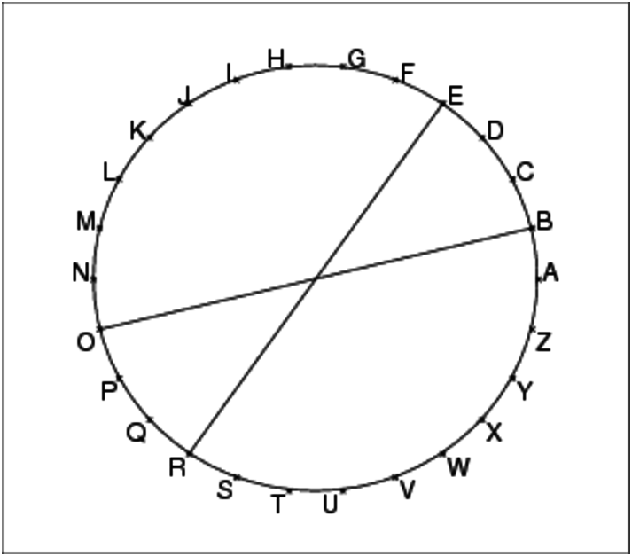
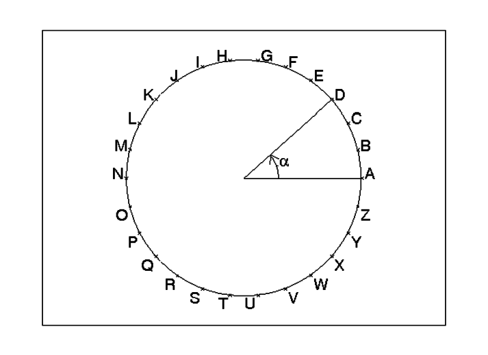

Le principe est simple : on écrit un message en n’utilisant que les 26
lettres de l’alphabet et on le code en remplacant une lettre par une autre
lettre.
Ceci peut être considéré comme une application f de l’ensemble
des lettres {A,B,C,...X,Y,Z} dans lui-même.
Pour pouvoir décoder, il faut que l’application f ci-dessus soit
bijective!
Il parait que Jules César utilisait cette méthode pour communiquer ses
ordres.
Une façon simple de coder est la suivante :
on écrit les lettres sur un cercle (de façon équirépartie) et on
remplace chaque lettre par la lettre symétrique par rapport au centre du
cercle :

Le décodage s’obtient de la même façon car ici f ∘ f=Id
On explique que l’on va coder un message en remplacant une lettre par une autre
(on suppose que le message n’utilise que les 26 lettres de l’alphabet et que
l’on n’écrit pas les espaces).
Pour cela on distribue une feuille sur laquelle figure quatre cercles divisés
en 26 parties égales.
On écrit sur ce cercle les 26 lettres de l’alphabet et le codage consiste
à remplacer chaque lettre du message par la lettre diamétralement opposéesur le cercle.
Par exemple voici le message à coder selon cette méthode :
"BONJOURLESAMIS"
Le message à décoder est donc :
"OBAWBHEYRFNZVF"
Quel sont les éléments pertinents qu’il faut transmettre pour que le
décodage soit possible ?
Parmi les réponses il est apparu qu’il fallait ajouter +13 pour décoder.
Puis chaque élève invente un codage et écrit un message selon son codage
et le donne à décoder à son voisin, par écrit avec les explications
nécessaires pour le décoder.
Voici quelques codages obtenus :
- codage obtenu en remplacant chaque lettre par celle qui la suit dans
l’alphabet,
- codage obtenu en remplacant chaque lettre par celle qui est obtenue en
avançant de +4 sur la roue (ou en reculant de 3 etc...),
- codage obtenu en remplaçant chaque lettre par celle qui est obtenue
par symétrie par rapport à la droite [A,N] (verticale sur le dessin),ou par
symétrie par rapport à la droite horizontale sur le dessin,
- codage par symétrie par rapport au centre du cercle mais où l’ordre des
lettres sur le cercle n’est pas respecté,
- d’autres codages comme de remplacer le message par une suite de nombres
(intéressant mais cela ne repond pas à la question posée),
- codage qui dépend de la position de la lettre dans le message. Ce codage
n’est pas une application puisque une même lettre peut avoir des codages
différents.
Combien y-a-t-il de codages (i.e de bijections) possibles ?
Il a fallut parler de bijections :
un étudiant a dit qu’il fallait que deux lettres différentes soient codées par
des lettres différentes pour que le décodage soit possible (injection).
Ceci entraine que toutes les lettres sont le codage d’une autre lettre
(surjection).
Pour simplifier on a préféré parler de permutations des lettres avec comme
exemple : trouver tous les codages possibles si on suppose que l’alphabet
utilisé ne comporte que les trois lettres A, B, C.
Donnez un ordre de grandeur de 26!
A supposer que vous vouliez écrire les 26! codages possibles sur un cahier et
que votre rythme est de 1 codage par seconde (vous êtes super rapide !!!...
félicitations !!!) combien de temps (réponse en heures, en mois, en années...?)
vous faut-il ?
Combien de cahiers de 10000 lignes (200 pages de 50 lignes) vous faut-il ?
Donner la longueur occupée par ces cahiers dans une bibliothèque, si chaque
cahier occupe 1 cm.
Combien y-a-t-il de codages involutifs possibles qui sont sans point double
(c’est à dire de bijections f
vérifiant f=f−1 et f(x)≠ x pour tout x) ?
Comment faire pour que la clé du décodage soit simple ?
Le codage de Jules César consiste à faire une symétrie point ou encore
une rotation d’angle π.
Si on numérote les lettres de 0 à 25, le codage consiste donc à faire
une addition de 13 (modulo 26).
(voir figure 12.1.2).
Exemple :
"BONJOUR" sera codé par "OBAWBHE"
Le principe est le même :
on écrit les lettres sur un cercle (de façon équirépartie) et on remplace
chaque lettre par la lettre obtenue par rotation d’angle
α=k*π/13 (0≤ k ≤ 25) (k est un entier).
Si on numérote les lettres de 0 à 25, le codage consiste donc à faire subir
à chaque lettre un décalage de k c’est à dire à faire subir à son
numéro une addition de k (modulo 26) (voir figure 12.1.5).
On remarquera que si le paramètre de codage par rotation est k, le
décodage sera un codage par rotation de paramètre -k ou encore
26-k.

À chaque lettre on peut faire correspondre son code ASCII.
Avec Xcas, asc("A")=[65] et asc("BON")=[66,79,78].
Donc pour avoir un entier entre
0 et 25 il suffit de retrancher 65 :
asc("A")-65 (=0) ou asc("BON")-[65,65,65] (=[1,14,13]).
On écrit donc la procédure c2n qui transforme une chaîne de caractères
m en une liste d’entiers l=c2n(m) entre 0 et 25 (le 2 de c2n veut dire "to" ou "vers" en français).
Il faut créer une liste formée des nombres 65 et de même longueur que le message avec makelist(65,1,size(m)).
On écrit :
c2n(m):={
return(asc(m)-makelist(65,1,size(m)));
}
Exemple :
c2n("BONJOUR")=[1,14,13,9,14,20,17]
À chaque entier n compris entre 0 et 25, on fait correspondre la
(n−1)ieme lettre en majuscule de l’alphabet (à 0 correspond "A",
‘a 1 correspond "B" etc...).
Avec Xcas, char(65)="A" et char([66,79,78])="BON".
On écrit donc la procédure n2c qui transforme une liste d’entiers
l
entre 0 et 25 en une chaîne de caractères m.
Il faut penser à ajouter 65 à tous les éléments de la liste
l (on forme une liste formée de 65 avec la fonction
makelist :
l+makelist(65,1,size(l))).
On écrit :
n2c(l):={
return(char(l+makelist(65,1,size(l))));
}
Exemple :
n2c([1,14,13,9,14,20,17])="BONJOUR"
On écrit donc la procédure decal de paramètres n et l qui
transforme une liste l d’entiers k entre 0 et 25 en la liste d’entiers
n+k mod 26.
On écrit :
decal(n,l):={
return(irem(l+makelist(n,1,size(l)),26));
}
Exemple :
decal(13,[1,14,13,9,14,20,17])=[14,1,0,22,1,7,4]
On écrit la procédure finale CESAR qui a deux paramètres :
l’entier n de décalage et le message m.
On écrit :
cesar(n,m):={
return(n2c(decal(n,c2n(m))));
}
Exemple :
cesar(13,"BONJOUR")="OBAWBHE"
On reprend les procédures c2n et n2c vues précédemment :
c2n transforme une chaîne
de caractères m en une liste d’entiers entre 0 et 25 et n2c
transforme une liste l d’entiers entre
0 et 25 en une chaîne de caractères m.
On écrit ensuite la procédure sym de paramètres n et l qui
transforme une liste l d’entiers k entre 0 et 25 en la liste
d’entiers n-k mod 26.
On peut considérer que le paramètre n détermine le diamètre D
perpendiculaire à la corde [0,n] (joignant A à la (n-1)ième lettre).
La procédure sym de paramètre
n est donc une symétrie par rapport à la droite D.
On écrit :
sym(n,l):={
return(irem(makelist(n,1,size(l))-l,26));
}
On écrit la procédure finale cesarsym qui a deux paramètres :
l’entier n (définissant la corde [0,n] normale au diamètre D)
et le message m.
On écrit :
cesarsym(n,m):={
return(n2c(sym(n,c2n(m))));
}
Exemple :
Si on prend n=13 on réalise une symétrie par rapport à la droite Ox
(cf figure 12.1).
cesarsym(13,"BONJOUR")="MZAEZTW"
Comme précédemment, on écrit la procédure c2n qui transforme une chaîne
de caractères m en une liste d’entiers entre 0 et 25 et on écrit
la procédure n2c qui transforme une liste l d’entiers entre
0 et 25 en une chaîne de caractères m.
On écrit ensuite la procédure affine de paramètre a,b,l qui
transforme une liste l d’entiers k entre 0 et 25 en la liste
d’entiers a*k+b mod 26.
On écrit :
affine(a,b,l):={
return(irem((a*l+makelist(b,1,size(l))),26));
}
On écrit ensuite :
cesaraffine(a,b,m):={
return(n2c(affine(a,b,c2n(m))));
}
Question :
Pour quelles valeurs de a et b le codage obtenu par cesaraffine peut-il être décodé ?
On écrit la procédure c2n2 qui transforme une chaîne de caractères
m en une liste l d’entiers entre 0 et 262−1=675 :
On fait des groupements de deux lettres (quitte à terminer le message par la
lettre "F" pour avoir un nombre pair de lettres), chaque groupement est
considéré comme l’écriture en base 26 d’un entier en utilisant comme
"chiffre" les lettres majuscules. Ainsi, "BC" est l’écriture en base 26 de 28 (28=1*26+2).
On écrit :
c2n2(m):={
local s,lr,l,n;
s:=size(m);
if (irem(s,2)==1){
m:=append(m,"F");
s:=s+1;
}
lr:=[];
l:=asc(m);
for (k:=0;k<s;k:=k+2){
n:=l[k]*26+l[k+1];
lr:=append(lr,n);
}
return(lr);
}
On écrit ensuite la procédure n2c2 qui transforme une liste
d’entiers
entre 0 et 675 (675=25*26+25=26*26-1) en une chaîne de caractères
m :
chaque entier étant écrit en base 26 avec comme "symboles" les 26 lettres
majuscules.
On écrit :
n2c2(l):={
local s,n,m;
s:=size(l);
m:="";
for (k:=0;k<s;k++){
n:=l[k];
m:=append(m,char(iquo(n,26)+65));
m:=append(m,char(irem(n,26)+65));
}
return(m);
}
On écrit ensuite la fonction affin2 de paramètre a,b,l qui
transforme une liste l d’entiers k entre 0 et 675 en la liste
d’entiers a*k+b mod 676 (entiers encore compris entre 0 et 675).
On écrit :
affin2(a,b,l):={
local s;
s:=size(l);
for (k:=0;k<s;k++){
l[k]:=irem(a*l[k]+b,676);
}
return(l);
}
On écrit ensuite la fonction cesar2 qui réalise le codage par groupement de 2 lettres utilisant l’application affine affin2:
cesar2(a,b,m):={
return(n2c2(affin2(a,b,c2n2(m))));
}
Question :
Pour quelles valeurs a1 de a et b1 de b, le codage obtenu par
cesaraffine peut-il être décodé ?
Réponse :
On doit avoir a1*(a*n+b)+b1=a1*a*n+a1*b+b1=n.
Il suffit donc de prendre : b1=−a1*b mod676 et a1*a=1 mod676
Ici, on ne se borne plus aux 26 lettres de l’alphabet, mais on veut pouvoir
utiliser les 101 caractères de la table ci-dessous.
Dans cette table, on a le code du caractère, puis, le caractère : ainsi
"5" a pour code 21 et "R" a pour code 50 et l’espace " " a pour code 0.
| 0 | |||||||||
| 1 ! | 2 " | 3 # | 4 $ | 5 % | 6 & | 7 ’ | 8 ( | 9 ) | 10 * |
| 11 + | 12 , | 13 - | 14 . | 15 / | 16 0 | 17 1 | 18 2 | 19 3 | 20 4 |
| 21 5 | 22 6 | 23 7 | 24 8 | 25 9 | 26 : | 27 ; | 28 < | 29 = | 30 > |
| 31 ? | 32 @ | 33 A | 34 B | 35 C | 36 D | 37 E | 38 F | 39 G | 40 H |
| 41 I | 42 J | 43 K | 44 L | 45 M | 46 N | 47 O | 48 P | 49 Q | 50 R |
| 51 S | 52 T | 53 U | 54 V | 55 W | 56 X | 57 Y | 58 Z | 59 [ | 60 \ |
| 61 ] | 62 &63 _ | 64 ‘ | 65 a | 66 b | 67 c | 68 d | 69 e | 70 f | |
| 71 g | 72 h | 73 i | 74 j | 75 k | 76 l | 77 m | 78 n | 79 o | 80 p |
| 81 q | 82 r | 83 s | 84 t | 85 u | 86 v | 87 w | 88 x | 89 y | 90 z |
| 91 { | 92 | | 93 } | 94 &95 ê | 96 ù | 97 ç | 98 à | 99 è | 100 é |
Voici les différentes étapes du codage (elles seront programmées avec Xcas dans le paragraphe suivant) :
codec2n(c):={
if (c=="\'e") return 100;
if (c=="\`e") return 99;
if (c=="\`a") return 98;
if (c=="\c{c}") return 97;
if (c=="\`u") return 96;
if (c=="\^e") return 95;
return(asc(c)-32);
};
coden2c(k):={
if (k== 100) return "\'e";
if (k==99) return "\`e";
if (k==98) return "\`a";
if (k==97) return "\c{c}";
if (k==96) return "\`u";
if (k==95) return "\^e";
return(char(k+32));
};
jules_cesar(message,clef):={
local s,j,messcode;
s:=size(message);
messcode:="";
for (j:=0;j<s;j++) {
messcode:=append(messcode,
coden2c(irem(clef+codec2n(message[j]),101)));
}
return (messcode);
};
lineaire(message,clef):={
local s,j,messcode;
s:=size(message);
messcode:="";
for (j:=0;j<s;j++) {
messcode:=messcode+coden2c(irem(clef*codec2n(message[j]),101));
}
return (messcode);
};
codec2n transforme un caractère c "autorisé" en un entier n,
0≤ n <101 selon la table 12.6.1.
coden2c transforme un entier n, 0≤ n <101
en un caractère c selon la table 12.6.1.
jules_cesar (respectivement lineaire) code le message selon la
clé choisie. On remarquera que les deux fonctions ne diffèrent que par
l’opération effectuée :
clef+codec2n(message[j]) pour la fonction jules_cesar et
clef+codec2n(message[j]) pour la fonction lineaire.
Pour décoder, il suffit d’employer le même programme en utilisant la clef
de décodage associée à la clef de codage et à la méthode utilisée :
par exemple, pour jules_cesar de clef de codage 99 la clé
de décodage associée est 2 (2+99=101=0 mod101) et
pour lineaire de clef de codage 99 la clef
de décodage associée est 50 puisque 99*50=−2*50=−100=1 mod101.
//#include <iostream>
#include <stdio.h>
#include <string.h>
#include <stdlib.h>
//using namespace std;
int codec2n(char c){
int i=c;
switch (c){
case '\'e':
i=100;
break;
case '\`e':
i=99;
break;
case '\`a':
i=98;
break;
case '\c{c}':
i=97;
break;
case '\`u':
i=96;
break;
case '\^e':
i=95;
break;
default:
i -= 32;
}
return i;
}
char coden2c(int i){
if (i<95)
return i+32;
switch (i){
case 95:
return '\^e';
case 96:
return '\`u';
case 97:
return '\c{c}';
case 98:
return '\`a';
case 99:
return '\`e';
case 100:
return '\'e';
}
}
int main(int argc,char ** argv){
char * s=0,ch;
size_t n=0;
int i,d,fois;
if (!strcmp(argv[0],"./table")){
for (i=0;i<101;++i){
ch=coden2c(i);
printf("%d:%c &",i,ch);
if (i%10==0)
printf("\n");
}
return 0;
}
if (!strcmp(argv[0],"./coden2c")){
for (i=1;i<argc;++i){
d=atoi(argv[i]);
ch=coden2c(d);
printf("%c",ch);
}
printf("\n");
return 0;
}
if (argc==3)
fois=atoi(argv[2]);
else
fois=0;
if (argc>=2){
s=argv[1];
n=strlen(s);
}
else {
printf("Entrez un message \`a num\'eriser\n");
getline(&s,&n,stdin);
n=strlen(s)-1;
}
for (i=0;i<n;++i){
d=codec2n(s[i]);
if (fois)
printf("%c",coden2c(d*fois % 101));
else
printf("%d ",d);
}
printf("\n");
return 0;
}
message 1, codage Jules César clef 10
\`uy\^e}*kvvo\'e*qkqxo|*\^ex*MN
message 2, codage Jules César clef 10
vk*}yv\^e~syx*x1o}~*zk}*)\`usnox~o
message 3, codage Jules César clef 23
(\`u(|7\`e|%7\`e!~\`uz\`u|\`e%7\`e\`uy$|%
message 4, codage Jules César clef 23
$\`u| 7 |7%|$&7{|7z!'$\`u$
message 5, codage Jules César clef 35
\'e..#*-,1C3,C!&\'e2C3,C!&\'e2
message 6, codage Jules César clef 35
*éC0B.-,1#C0#*A4#C"3C"B$’
message 7, codage Jules César clef 99
f_`gjcr\`aq\`ea_jasj_rmgpcq\`em`jge_rmgpcq
message 8, codage Jules César clef 99
gj\`ed_gr\`e`c_s\`ecr\`eaf_sb
message 9, codage Jules César clef 51
:ZCB7:7A/B7=<S23S13S1=2/53S3ABS27A1CB/0:3
message 10, codage Jules César clef 51
<=CASD=C:=<ASRD7B3@S:/S1=<4CA7=<
message 11, codage Jules César clef 45
*-)=+7=8M,-M<:)>)14M87=:M:1-6
message 12, codage Jules César clef 45
;+1-6+-M;)6;M+76;+1-6+-M6T-;<M9=-M:=16-M,-M4T)5-
message 1, codage linéaire clef 10
TsJ6 LUUt| #L#it, Ji OY
message 2, codage linéaire clef 10
UL 6sUJ@7si ift6@ }L6 {T7jti@t
message 3, codage linéaire clef 23
[_[h ?h{ ?\'e1_:_h?{ ?_#dh{
message 4, codage linéaire clef 23
d_hm mh {hd- Qh :\'eDd_d
message 5, codage linéaire clef 35
Uii|BF#m N# 6\`uU+ N# 6\`uU+
message 6, codage linéaire clef 35
BU JbiF#m| J|B?q| YN Yb:>
message 7, codage linéaire clef 99
ZhfXR`B"D dhRd@RhBLXF`D LfRX\hBLXF`D
message 8, codage linéaire clef 99
XR ^hXB f`h@ `B dZh@b
message 9, codage linéaire clef 51
FV}JwFw|sJwzG Bu tu tzBsvu u|J Bw|t}JsAFu
message 10, codage linéaire clef 51
Gz}| Kz}FzG| RKwJuI Fs tzGC}|wzG
message 11, codage linéaire clef 45
Ik\c{c}xv4xa >k KV\c{c}@\c{c}Uw a4xV VUkl
message 12, codage linéaire clef 45
\`evUklvk \`e\c{c}l\`e v4l\`evUklvk l,k\`eK )xk VxUlk >k w,\c{c}?k
1: vous allez gagner un CD
2: la solution n’est pas évidente
3: vive les logiciels libres
4: rien ne sert de courir
5: appelons un chat un chat
6: la réponse relève du défi
7: habiletés calculatoires obligatoires
8: il fait beau et chaud
9: l’utilisation de ce codage est discutable
10: nous voulons éviter la confusion
11: beaucoup de travail pour rien
12: science sans conscience n’est que ruine de l’ame
Pour écrire le message on ne se restreint plus aux 26 lettres de l’alphabet.
On suppose que le message à coder n’utilise que les caractères dont le code
ASCII va de 32 à 127 (avant 32, les caractères ne sont pas imprimables, et
après 127 il s’agit de caractères spéciaux...).
On choisit dans ce premier algorithme de coder chaque lettre : cela à
l’incovénient de décrypter facilement le message en analysant la
fréquence des lettres du message crypté, c’est pourquoi dans le deuxième
algorithme, on code des groupements de trois lettres.
Il y a alors trois choses à faire qui sont les trois instructions de la
fonction cod1 et qui code un caractère par un autre caractère :
- on transforme chaque caractère en un entier n de 0 à 95 (en enlevant 32
à son code ASCII)
- puis, on applique à cet entier n le chiffrement affine :
f(n)=a × n+b (mod 96) avec f(n) ∈[0..95].
Pour que cette application soit bijective il faut et il suffit que a soit
premier avec 96. En effet d’après l’identité de Bézout il
existe u et v tels que :
a × u+96 × v=1 donc a × u=1 (mod 96)).
On a donc f−1(m)=u.(m−b) (mod96)
- on transforme le nombre trouvé f(n) en un caractère de code f(n)+32.
Pour coder le message, il suffit ensuite de coder chaque caractère,
c’est ce que fait la fonction codm1.
Pour décoder, il suffit de remplacer la valeur de a par
a1=u (mod 96) si a × u+96 × v=1
et la valeur de b par b1=−a1 × b (mod 96)
car alors on a n=a1 × f(n)+b1 (mod 96)
Les fonctions de décodage et de codage sont donc les mêmes , seuls les
paramètres sont différents!
Exemple
a=85 b=2
On a par l’identité de Bézout :
85 × 61 − 96 × 54 = 1
et
−2 × 61 = −122 = 70 (mod 96)
donc on obtient :
a1=61 b1=70
On note char la fonction qui à un nombre n associe
le caractère de code ASCII n et asc la fonction qui à un caractère associe son code ASCII.
Voici le codage d’une lettre c par la fonction cod1 (a,b sont les
paramètres du chiffrement affine) :
fonction cod1(c,a,b)
local n
asc(c)-32 => n
a.n+b mod 96 => n
résultat char(n+32)
ffonction
On suppose que l’on a accés au k-ième caractère du mot m en
mettant m[k].
On suppose que la concaténation de deux mots se fait avec concat.
Voici le codage du message m par la fonction coda1 (a,b sont les
paramètres du chiffrement affine) :
fonction codm1(m,a,b)
local r,k,n
"" =>r
k=>0
longueur_mot(m)=>s
tantque k<s
m[k]=>c
k+1=>k
concat(r,cod1(c,a,b))=>r
ftantque
retourne r
ffonction
On dispose de :
- char la fonction qui à un nombre n associe le caractère de
code ASCII n et, qui a une liste de nombres associe la chaîne des
caractères dont les codes correspondent aux nombres de la liste.
- asc la fonction qui à une chaîne de caractères
associe la liste des codes ASCII des caractères composant la chaîne.
Attention asc("A")=[65] et donc (asc("A"))[0]=65.
Voici le codage d’une lettre par la fonction cod1 :
cod1(c,a,b):={
local n;
n:=(asc(c))[0]-32;
n:=irem(a*n+b,96);
return(char(n+32));
}
Voici le codage du message par la fonction codm1 :
codm1(m,a,b):={
local r,c,s;
r:="";
s:=size(m);
for (k:=0;k<s;k++){
c:=m[k];
r:=concat(r,cod1(c,a,b));
}
return(r);
}
On peut aussi coder directement le message mess : en effet avec
Xcas les fonctions asc
et char gérent les chaînes et les listes.
On transforme donc le message (i.e une chaîne de caractères)
en une liste l de nombres avec asc(mess), puis on transforme cette
liste de nombres par l’application
affine f(n)=a × n+b (mod 96) en la liste mc, puis on
transformer la liste lc
des nombres ainsi obtenus en une chaîne de caractères
(avec char(lc), c’est ce que fait la fonction codm).
Dans ce qui suit on a écrit les fonctions :
bonpara(para) (avec para=[a,b]) renvoie la liste des paramètres
de décodage si le paramètre a est premier avec 96.
Cette fonction utilise la fonction decopara(para) qui calcule les paramètres de décodage.
decopara(para):={
//decopara permet de trouver les parametres de decodage
local bez,a,b;
a:=para[0];
b:=para[1];
bez:=bezout(a,96);
a:=irem(bez[0],96);
if (a<0) a:=a+96;
b:=irem(-b*a,96);
if (b<0) b:=b+96;
return([a,b]);
};
bonpara(para):={
//teste si a est premier avec 96
if (pgcd(para[0],96)==1) return(decopara(para)); else return(false);
};
codm(mess,para):={
//codage par chiffrement affine de parametres para=[a,b] mod 96
//codm code le message mess (="....") avec para=[a,b]
local l,lc,sl,a,b,c;
a:=para[0];
b:=para[1];
l:=asc(mess);
sl:=size(l);
for (k:=0;k<sl;k++){
//les caracteres codes entre 0 et 31 ne sont pas lisibles
l[k]:=l[k]-32;
}
lc:=[];
for (j:=0;j<sl;j++){
c:=irem(a*l[j]+b,96);
lc:=concat(lc,32+c);
}
return(char(lc));
}
On peut aussi choisir de coder le message en le découpant par paquets de 3
lettres que l’on appelle mot et en rajoutant, éventuellement, des espaces à la fin du message
pour que le nombre de caractères du message soit un multiple de 3.
Comme précédemment, à chaque caractère on fait correspondre un nombre entier
de l’intervalle [0..95].
On considére alors un mot de 3 lettres comme l’écriture dans la base 96 d’un nombre entier n :
Exemple
le mot BAL est la représentation de n=34 × 962+33 × 96+44=316556.
En effet B est codé par 34 puisque son code ASCII est 66 (66-32=34),
A est codé par 33 et L est codé par 44.
On code les mots de 3 lettres par un autre mot, puis on en déduit le
codage du message tout entier.
Le programme mot2n transforme un mot m de 3 lettres en un nombre entier
n dont l’écriture en base 96 est m. On a donc, si m a 3 lettres
n<963.
Par exemple mot2n("BAL")=316559.
Le progamme codaff transforme n selon le chiffrement affine :
f(n)=a × n+b mod p .
- il faut choisir p ≥ 963 ; si p>963, le nombre (f(n)) obtenu
aprés transformation affine de n, peut avoir une représentation de
plus de 3 lettres dans la base 96.
Mais, au décodage tous les mots auront exactement 3 lettres.
Pour les calculateurs qui limitent la représentation d’un entier à 12
chiffres il faut choisir p ≤ 106 pour que a × n +b < 1012
- pour que f soit inversible il faut que a et p soient premiers entre eux
(cf p ??) .
Exemple
a=567 b=2 p=106
On obtient par Bézout :
567 × 664903 +106 × 377 =1
et −2 × 664903 = 670164 mod 106
donc a1=664903 et b1=670164
Le programme n2mot fait l’opération inverse et transforme un nombre
entier n en un mot m (d’au moins 3 symboles) qui est la représentation
de n dans la base 96.
Il faut faire attention aux espaces en début de mot!!! En effet, l’espace
est codé par 0 et il risque de disparaître si on ne fait pas
attention, au décodage!!!
Exemple
On a n2mot(34)=" B" (c’est à dire la chaîne formée par 2 espaces et B).
Le programme codmot3 code les mots d’au moins 3 lettres en un mot d’au moins 3
lettres à l’aide du chiffrement affine. En changeant les paramètres a et b
codmot3 décode les mots codés avec codmot3.
Le programme codmess3 code les messages à l’aide du chiffrement affine. Pour décoder, il suffit d’utiliser la fonction codmess3 en changeant les paramètres a et b.
Voici la transformation d’un mot m en un nombre
entier n par la fonction mot2n :
fonction mot2n(mo)
local k,p,n
0=>n
0=>k
tantque k<longueur_mot(mo) ≠ ""
asc(mo[k])-32=>p
k+1=>k
n*96+p=>n
ftantque
retourne n
ffonction
Voici la transformation d’un nombre entier n en son écriture en base 96
(c’est à dire en un mot m d’au moins 3 lettres) par la fonction
n2mot :
fonction n2mot(n)
local m,r,j
""=>m
0=>j
tantque n >0 ou j< 3
char((n mod 96)+32)=>r
int(n/96)=>n
r+m=>m
j+1=>j
ftantque
retourne m
ffonction
Voici le codage d’un mot d’au moins 3 lettres par la fonction codmot3 :
fonction codmot3(m,a,b,p)
local n
mot2n(m)=>n
a.n+b mod p =>n
n2mot(n)=>m
retourne m
ffonction
Voici le codage d’un message par la fonction codmess :
fonction codmess3(m,a,b,p)
local n,i,r,d
int(dim(m)/3)+1=>n
{}=>r
1=>i
tantque i<n
debut(m,3)=>d
fin(m,4)=>m
codmot3(d,a,b,p)=>r[i]
i+1=>i
ftantque
si dim(m)=2 alors
m + " "=>m
codmot3(m,a,b,p)=>r[i]
sinon
si dim(m)=1 alors
m + " " =>m
codmot3(m,a,b,p)=>r[i]
sinon
fin(r,i-1)=>r
fsi
fsi
retourne r
ffonction
Voici la fonction decopara3(para) qui donne les paramètres de décodage
quand les paramètres sont corrects.
On prend comme chiffrement affine a*n+b mod 963 car on veut mettre le message codé dans une chaîne et donc transformer un paquet
de 3 lettres en un paquet d’exactement 3 lettres.
decopara3(para):={
//=le parametrage de decodage du parametrage para (liste).
local a,b,l;
a:=para[0];
b:=para[1];
l:=bezout(a,96^3);
if (l[2]!=1) return(false);
a:=l[0];
if (a<0) a:=a+96^3;
b:=-irem(b*a,96^3)+96^3;
return([a,b]);
}
Voici la transformation d’un mot s d’au moins 3 lettres en un nombre entier par la fonction mot2n :
mot2n(s):={
//transforme un mot s de 3 lettres en n
//n a pour ecriture s en base 96
local l,n;
l:=asc(s);
n:=(l[0]-32)*96^2+(l[1]-32)*96+l[2]-32;
return(n);
}
Voici la transformation d’un nombre entier n en son écriture en base 96 (c’est à dire en un mot d’au moins 3 lettres) par la fonction n2mot : cette fonction utilise la fonction ecritu96 qui écrit n dans la base 96 comme un mot de 1,2,3 etc caractères. Pour obtenir un mot d’au moins 3 lettres il suffit de rajouter des espaces devant le mot puisque le code ASCII de l’espace vaut 32, cela revient à rajouter des zéros devant l’écriture de n.
ecritu96(n):={
//transforme l'entier n en la chaine s
//s est l'ecriture de n en base 96
local s,r;
// n est un entier et b=96
// ecritu96 est une fonction iterative
//ecritu96(n)=l'ecriture de n en base 96
s:="";
while (n>=96){
r:=irem(n,96);
r:=char(r+32);
s:=r+s;
n:=iquo(n,96);
}
n:=char(n+32);
s:=n+s;
return(s);
};
n2mot(n):={
local mot,s;
mot:=ecritu96(n);
s:=size(mot);
//on suppose n<96^3 on transforme n en un mot de 3 caracteres
//on rajoute des espaces si le mot n'a pas 3 lettres
if (s==2) {mot:=" "+mot;}
else {
if (s==1) {mot:=" "+mot;}
}
return(mot);
}
Voici le codage d’un mot d’au moins 3 lettres par la fonction codmot3 : en prenant toujours p=963
codmot3(mot,para):={
//codage d'un mot de 3 lettres avec le parametrage para=[a,b]
local n,m,a,b;
//para:[569,2] mod 96^3
//decopara3=[674825, 419822]
a:=para[0];
b:=para[1];
n:=mot2n(mot);
m:=irem(a*n+b,96^3);
return(n2mot(m));
}
Le décodage d’un mot codé avec codmot3 se fait aussi avec la fonction
codmot3.
Voici le codage d’un message par la fonction codmess3 :
codmess3(mess,para):={
//code le message mess,parametrage para et paquet de 3 lettres
local s,messcod,mess3;
s:=size(mess);
if (irem(s,3)==2){
mess:=mess+" ";
s:=s+1;
}
else {
if (irem(s,3)==1) {
mess:=mess+" ";
s:=s+2;
}
}
messcod:="";
for (k:=0;k<s;k:=k+3){
mess3:=mess[k..k+2];
mess3:=codmot3(mess3,para);
messcod:=messcod+mess3;
}
return(messcod);
}
Le décodage du message se fait aussi par la fonction codmess3
On écrit un message plus ou moins long selon le nombre d’élèves de la classe.
Puis on le partage en groupement de 8 lettres.
Chaque groupe de 8 lettres est ensuite codé (lettre par lettre) à l’aide d’un chiffrement affine
de paramètres diffèrents selon les élèves.
Le chiffrement affine lettre à lettre est déterminé par la donnée de 3 paramètres :
a,b,p qui transforme l’entier n en m=a*n+b (mod p).
Pour avoir une fonction de décodage il faut et il suffit que a soit inversible
dans Z/pZ c’est à dire que a et p soient premiers entre eux.
La fonction de décodage est alors :
a1*m+b1 avec,
a1 inverse de a dans Z/pZ (a1=u (mod p) si a*u+p*v=1
(identité de Bézout)) et b1=−b*a1 (mod p).
Pour ce chiffrement affine, on peut utiliser tous les caractères dont les codes
ASCII vont de 32 à 127 (les caractères de code 0 à 31 ne sont pas imprimables
et au delà de 127 ils ne sont pas standards).
Étant donnés a, b, p=96, comment coder ?
À chaque caractère (de code ASCII compris entre 32 et 127) on fait
correspondre un entier n entre 0 et 95 ;
n est égal à : (code ASCII du caractère) - 32.
Par exemple, à B on fait correspondre 34 (66-32 ).
Puis, on calcule m=a*n+b mod 96 :
pour a=55, b=79 et n=34 on obtient m=29.
Puis, on cherche le caractère de code ASCII m+32. Le caractère qui a
comme code ASCII 29+32=61 est le signe =) : c’est ce caractère qui
sera donc choisi comme codage de la lettre B.
Exemple :
On va coder la phrase :
BEAUCOUP DE TRAVAIL POUR RIEN!?
en la coupant en trois morceaux (le caractère espace termine les deux premiers morceaux).
Par exemple :
BEAUCOUP sera codé avec a=55 b=79 et p=96
DE TRAVAIL sera codé avec a=49 b=25 et p=96
POUR RIEN!? sera codé avec a=73 b=48 et p=96
On code BEAUCOUP avec a=55 b=79 et p=96.
On obtient :
="f2th2?o
Le devoir du premier élève est donc :
avec les paramètres de codage a=55 b=79 et p=96, décoder ="f2th2?o
L’élève doit :
- trouver les paramètres de décodage (ici a1=7 b1=23) :
en effet l’inverse a1 de a (mod96) est obtenu en ecrivant l’identité de Bézout pour a et p :
55*7−96*4=1 et b1=79*7 (mod 96) = 23
- puis décoder à l’aide d’une table de code ASCII :
le code ASCII du caractère = est 61 donc :
m=61−32=29
a1*n+b1 (mod 96) = 7*29+23 (mod 96) = 226 (mod 96) = 34
La lettre de code 34+32 = 66 est B
Voici pour Xcas, la table des codes ASCII compris entre 30
et 127.
| 0 | 1 | 2 | 3 | 4 | 5 | 6 | 7 | 8 | 9 | |
| 30 | _ | ! | " | # | $ | % | & | ’ | ||
| 40 | ( | ) | * | + | , | - | . | / | 0 | 1 |
| 50 | 2 | 3 | 4 | 5 | 6 | 7 | 8 | 9 | : | ; |
| 60 | < | = | > | ? | @ | A | B | C | D | E |
| 70 | F | G | H | I | J | K | L | M | N | O |
| 80 | P | Q | R | S | T | U | V | W | X | Y |
| 90 | Z | [ | \ | ] | _ | ‘ | a | b | c | |
| 100 | d | e | f | g | h | i | j | k | l | m |
| 110 | n | o | p | q | r | s | t | u | v | w |
| 120 | x | y | z | { | | | } | ? | |||
| 130 |
On veut coder un message mess qui n’utilise que les 26 lettres majuscules
de l’alphabet.
Dans le codage de César à chaque caractère correspond toujours le même
caractère : c’est une fonction qui à une lettre de l’alphabet fait
correspondre une lettre de l’alphabet.
Dans le codage de Vigenère à un caractère cara du message correspond un
caractère qui dépend de la position du caractère cara dans
le message : c’est une fonction f de 2 variables qui à un entier n
(0≤ n≤ 25) et et à une lettre de l’alphabet fait correspondre une
lettre de l’alphabet. Cette correspondance se fait à l’aide d’une matrice
carrée symétrique de dimension 26 appelée : carré de Vigenère.
On a asc("A")=65. Si le rang de "A" dans la liste alphabétique
est 0 alors le rang d’une lettre c dans la liste alphabétique
est : op(asc(cara))-65. Il faut utiliser la commande op pour
transformer la liste de dimension 1 renvoyée par asc en un nombre.
Si à une lettre on fait correspondre son rang dans la liste alphabétique,
au carré de Vigenère on peut faire correspondre la matrice carrèe de
dimension 26 :
A[j,k]:=irem(j+k, 26) pour j=0..25 et k=0..25.
Réciproquement si à un entier j de l’intervalle 0..25] on fait
correspondre la lettre de rang j dans la liste alphabétique, alors,
à la matrice la matrice carrèe de dimension 26 A[j,k]:=irem(j+k, 26)
on fait correspondre le carré de Vigenère.
On tape pour obtenir le carré de Vigenère CV :
CV:=makemat((j,k)->char(65+irem(j+k,26)),26,26)
On tape pour obtenir la fonction f de codage :
f(n,cara):=CV[n,op(asc(cara))-65]
Propriétés
La matrice A[j,k]:=irem(j+k, 26) est symétrique donc le carré de
Vigenère est symétrique.
Si connaissant j et r, on cherche k pour que r=A[j,k],
alors on a k=A[26-j,r]=A[r,26-j].
En effet, r=irem(j+k,26) donc k=irem(r-j,26)=irem(r+26-j,26.
Donc si r=A[j,k] alors k=A[26-j,r]=A[r,26-j].
On peut utiliser le tableau à double entrées ci-dessous pour coder à la
main :
| A | B | C | D | E | F | G | H | I | J | K | L | M | N | O | P | Q | R | S | T | U | V | W | X | Y | Z | |
| 0 | A | B | C | D | E | F | G | H | I | J | K | L | M | N | O | P | Q | R | S | T | U | V | W | X | Y | Z |
| 1 | B | C | D | E | F | G | H | I | J | K | L | M | N | O | P | Q | R | S | T | U | V | W | X | Y | Z | A |
| 2 | C | D | E | F | G | H | I | J | K | L | M | N | O | P | Q | R | S | T | U | V | W | X | Y | Z | A | B |
| 3 | D | E | F | G | H | I | J | K | L | M | N | O | P | Q | R | S | T | U | V | W | X | Y | Z | A | B | C |
| 4 | E | F | G | H | I | J | K | L | M | N | O | P | Q | R | S | T | U | V | W | X | Y | Z | A | B | C | D |
| 5 | F | G | H | I | J | K | L | M | N | O | P | Q | R | S | T | U | V | W | X | Y | Z | A | B | C | D | E |
| 6 | G | H | I | J | K | L | M | N | O | P | Q | R | S | T | U | V | W | X | Y | Z | A | B | C | D | E | F |
| 7 | H | I | J | K | L | M | N | O | P | Q | R | S | T | U | V | W | X | Y | Z | A | B | C | D | E | F | G |
| 8 | I | J | K | L | M | N | O | P | Q | R | S | T | U | V | W | X | Y | Z | A | B | C | D | E | F | G | H |
| 9 | J | K | L | M | N | O | P | Q | R | S | T | U | V | W | X | Y | Z | A | B | C | D | E | F | G | H | I |
| 10 | K | L | M | N | O | P | Q | R | S | T | U | V | W | X | Y | Z | A | B | C | D | E | F | G | H | I | J |
| 11 | L | M | N | O | P | Q | R | S | T | U | V | W | X | Y | Z | A | B | C | D | E | F | G | H | I | J | K |
| 12 | M | N | O | P | Q | R | S | T | U | V | W | X | Y | Z | A | B | C | D | E | F | G | H | I | J | K | L |
| 13 | N | O | P | Q | R | S | T | U | V | W | X | Y | Z | A | B | C | D | E | F | G | H | I | J | K | L | M |
| 14 | O | P | Q | R | S | T | U | V | W | X | Y | Z | A | B | C | D | E | F | G | H | I | J | K | L | M | N |
| 15 | P | Q | R | S | T | U | V | W | X | Y | Z | A | B | C | D | E | F | G | H | I | J | K | L | M | N | O |
| 16 | Q | R | S | T | U | V | W | X | Y | Z | A | B | C | D | E | F | G | H | I | J | K | L | M | N | O | P |
| 17 | R | S | T | U | V | W | X | Y | Z | A | B | C | D | E | F | G | H | I | J | K | L | M | N | O | P | Q |
| 18 | S | T | U | V | W | X | Y | Z | A | B | C | D | E | F | G | H | I | J | K | L | M | N | O | P | Q | R |
| 19 | T | U | V | W | X | Y | Z | A | B | C | D | E | F | G | H | I | J | K | L | M | N | O | P | Q | R | S |
| 20 | U | V | W | X | Y | Z | A | B | C | D | E | F | G | H | I | J | K | L | M | N | O | P | Q | R | S | T |
| 21 | V | W | X | Y | Z | A | B | C | D | E | F | G | H | I | J | K | L | M | N | O | P | Q | R | S | T | U |
| 22 | W | X | Y | Z | A | B | C | D | E | F | G | H | I | J | K | L | M | N | O | P | Q | R | S | T | U | V |
| 23 | X | Y | Z | A | B | C | D | E | F | G | H | I | J | K | L | M | N | O | P | Q | R | S | T | U | V | W |
| 24 | Y | Z | A | B | C | D | E | F | G | H | I | J | K | L | M | N | O | P | Q | R | S | T | U | V | W | X |
| 25 | Z | A | B | C | D | E | F | G | H | I | J | K | L | M | N | O | P | Q | R | S | T | U | V | W | X | Y |
Si à une lettre on fait correspondre son rang dans la liste alphabétique,
au carré de Vigenère on peut faire correspondre la matrice :
A[j,k]:=irem(j+k, 26).
Ce carré donne la valeur de la fonction f du codage qui est :
f(0,"D")="D" (ligne 0 et colonne 3) et f(2,"D")="F" (ligne 2 et
colonne 3) pour coder par exemple les "D" de "DINDON" (Attention
les indices commencent à 0).
Ainsi "BONJOUR" sera codé par :
f("B",0)+f("O",1)+f("N",2)+f("J",3)+f("O",4)+f("U",5)+f("R",6)
c’est à dire "BPPMSZX"
On pourra voir le programme qui code, décode avec ou sans clé en
12.10.10.
On utilise CV dans le programme.
On veut coder la lettre c qui est d’indice j dans le message.
Cette lettre c est de rang op(asc(c))-65 dans l’alphabet.
Il faut donc chercher dans le tableau CV la lettre d’indice ligne
irem(j,26) et d’indice colonne op(asc(c))-65.
Par exemple si on cherche à coder "O" d’indice 4 du message (la 5ième lettre du message à coder).
"O" a comme rang op(asc("O"))-65=14 dans l’alphabet ("O"
est la 15ième lettre de l’alphabet).
Le codage est donc la lettre située dans la ligne d’indice irem(4,26)=4
(ligne débutant par "E") et dans la colonne 14 du tableau
CV.
"O" a donc pour code CV[4,14]="S" car :
| E | F | G | H | I | J | K | L | M | N | O | P | Q | R | S | T | U | V | W | X | Y | Z | A | B | C | D |
On tape :
f(n,cara):=CV[irem(n,26),op(asc(cara))-65]:;
CV:=makemat((j,k)->char(65+irem(j+k,26)),26,26):;
codage(str):={
local j,k,c,s,code,CV;
s:=size(str);
CV:=makemat((j,k)->char(65+irem(j+k,26)),26,26):;
code:="";
pour j de 0 jusque s-1 faire
c:=str[j];
code:=code+CV[irem(j,26),op(asc(c))-65];
//code:=code+f(j,c);
fpour;
return code;
}:;
On peut aussi ne pas utiliser CV :
On veut coder la lettre c qui est d’indice j dans le message.
Cette lettre c est de rang op(asc(c))-65 dans l’alphabet.
Dans le tableau CV la lettre qui commence la ligne d’indice
irem(j,26) est char(irem(j,26))+65 et a comme code ASCII
irem(j,26)+65.
La lettre de cette ligne située à la colonne d’indice op(asc(c))-65 a
donc comme rang k:=irem(op(asc(c))-65+irem(j,26),26) dans l’alphabet.
La lettre de codage de c est donc char(k+65).
Par exemple si on cherche à coder "O" d’indice 4 du message (la 5ième lettre du message à coder).
"O" a comme rang op(asc("O"))-65=14 dans l’alphabet ("O"
est la 15ième lettre de l’alphabet).
Le codage est donc la lettre située dans la ligne d’indice irem(4,26)=4
(ligne débutant par "E" ayant comme rang 4 dans l’alphabet) et
dans la colonne 14 c’est donc la lettre "S" de rang 4+14=18
de l’alphabet (car "S" est la 19ième lettre de l’alphabet).
Attention si la somme des 2 indices se fait modulo 26 car cette somme est
l’indice d’une lettre de l’alphabet et cette somme ne doit pas dépasser 25,
c’est pourquoi k:=irem(op(asc(c))-65+irem(j,26),26).
"O" a donc pour code "S".
On tape :
codage(str):={
local j,k,c,s,code;
s:=size(str);
code:="";
pour j de 0 jusque s-1 faire
c:=str[j];
k:=irem(op(asc(c))-65+irem(j,26),26);
code:=code+char(k+65);
fpour;
return code;
}:;
On tape :
codage("BONJOURBONJOURBONJOURBONJOUR")
On obtient :
"BPPMSZXIWWTZGEPDDAGNLWKKHNUS"
On utilise CV dans le programme :
Si la lettre à déchiffrer c est d’indice j dans le message à
décoder, il faut chercher l’indice de la lettre c sur la ligne
d’indice irem(j,26)] et trouver son indice k dans cette ligne sans
utiliser la fonction member.
Propriété de la matrice CV :
On remarque que si pour j∈ 0..25 et l∈ "A".."Z" on définit :
f(j,l):=CV[op(asc(l))-65,irem(j,26)]
g(j,l):=CV[irem(26-j,26),op(asc(l))-65]
alors
f(j,g(j,l))=l
Autrement dit si la lettre c est d’indice j dans
le message codé alors la lettre d’indice j dans
le message non codé est CV[irem(26-j,26),op(asc(c))-65].
Par exemple si on cherche à déchiffrer
"S" d’indice 4 (la 5ième lettre du message à décoder), il faut
chercher l’indice de "S" dans la ligne d’indice 4. La lettre cherchèe a
donc comme indices dans CV :
[irem(26-4,26), op(asc("S"))-65]=[22,18].
C’est donc CV[22,18]="O".
On tape :
g(n,cara):=CV[irem(26-n,26),op(asc(cara))-65]:;
CV:=makemat((j,k)->char(65+irem(j+k,26)),26,26):;
decodage(str):={
local j,k,c,s,mess,CV;
s:=size(str);
CV:=makemat((j,k)->char(65+irem(j+k,26)),26,26):;
mess:="";
pour j de 0 jusque s-1 faire
c:=str[j];
//mess:=mess+g(j,c);
mess:=mess+CV[irem(26-j,26),op(asc(c))-65]
fpour;
return mess;
}:;
On peut aussi ne pas utiliser CV.
Si la lettre à déchiffrer c est d’indice j dans le message à
décoder, il faut chercher la lettre c sur la ligne
d’indice irem(j,26)] et trouver son indice k dans cette ligne sans
utiliser la fonction member.
Il suffit donc de faire la différence modulo 26, entre le rang de la
lettre c dans l’alphabet (op(asc(c))-65) et l’indice
irem(j,26) soit :
irem(op(asc(c))-65-irem(j,26),26)=irem(op(asc(c))-65-j,26).
Par exemple si on cherche à déchiffrer
"S" d’indice 4 dans le message (la 5ième lettre du message à
décoder), il faut chercher l’indice de "S" dans la ligne d’indice 4
débutant par"E" :
| E | F | G | H | I | J | K | L | M | N | O | P | Q | R | S | T | U | V | W | X | Y | Z | A | B | C | D |
L’indice de "S" dans la ligne d’indice 4 débutant par"E" est
donc :
irem(op(asc("S"))-65-4,26)=irem(18-4,26)=14.
La lettre cherchèe a donc comme rang 14 dans l’alphabet.
C’est donc char(14+65)="O".
On tape :
decodage1(str):={
local j,k,c,s,mess;
s:=size(str);
mess:="";
pour j de 0 jusque s-1 faire
c:=str[j];
k:=irem(op(asc(c))-65-j,26);
mess:=mess+char(k+65);
fpour;
return mess;
}:;
On tape :
decodage("BPPMSZXIWWTZGEPDDAGNLWKKHNUS")
On obtient :
"BONJOURBONJOURBONJOURBONJOUR"
On voit qu’il est facile de faire le décodage d’un message si on ne donne
pas une clé.
La clé est un mot qui va nous servir à coder le message.
Prenons comme exemple une clé simple : "XCAS".
Si le message à coder est "BONJOUR", on écrit "XCAS" plusieurs fois sous le
mot à coder :
"BONJOUR"
"XCASXCA"
puis, on utilise seulement le moceau du carré de Vigenère qui correspond
à la clè á savoir que les lignes qui commencent par "X","C","A","S":
| A | B | C | D | E | F | G | H | I | J | K | L | M | N | O | P | Q | R | S | T | U | V | W | X | Y | Z | |
| 0 | X | Y | Z | A | B | C | D | E | F | G | H | I | J | K | L | M | N | O | P | Q | R | S | T | U | V | W |
| 1 | C | D | E | F | G | H | I | J | K | L | M | N | O | P | Q | R | S | T | U | V | W | X | Y | Z | A | B |
| 2 | A | B | C | D | E | F | G | H | I | J | K | L | M | N | O | P | Q | R | S | T | U | V | W | X | Y | Z |
| 3 | S | T | U | V | W | X | Y | Z | A | B | C | D | E | F | G | H | I | J | K | L | M | N | O | P | Q | R |
Pour coder "BONJOUR", on code "B" avec "Y", (ligne 0 débutant par "X" et
colonne "B"), "O" avec "Q" (ligne 1 débutant par "A" et colonne "O"), "N"
avec "N", "J" avec "B", "O" avec "L", "U" avec "W" et "R" avec "R".
Le codage de "BONJOUR" est donc "YQNBLWR".
Voici le programme qui donne en fonction de la clé utilisée, la matrice
extraite de la matrice CV i.e. le carré de Vigenère.
On tape :
TVAC(cle):={
local sc,VAC,CV;
sc:=size(cle);
CV:=makemat((j,k)->char(65+irem(j+k,26)),26,26);
VAC:=makemat(0,sc,26);
pour j de 0 jusque sc-1 faire
VAC[j]:=CV[op(asc(cle[j])-65)];
fpour;
return VAC;
}:;
On tape :
TVAC("XCAS")
On obtient :
| X | Y | Z | A | B | C | D | E | F | G | H | I | J | K | L | M | N | O | P | Q | R | S | T | U | V | W |
| C | D | E | F | G | H | I | J | K | L | M | N | O | P | Q | R | S | T | U | V | W | X | Y | Z | A | B |
| A | B | C | D | E | F | G | H | I | J | K | L | M | N | O | P | Q | R | S | T | U | V | W | X | Y | Z |
| S | T | U | V | W | X | Y | Z | A | B | C | D | E | F | G | H | I | J | K | L | M | N | O | P | Q | R |
On peut utiliser la fonction TVAC pour programmer le codage de Vigenère
avec une clé.
On veut coder la lettre c qui est d’indice j dans le message.
Cette lettre c est de rang op(asc(c))-65 dans l’alphabet.
Il faut donc chercher dans le tableau VAC la lettre d’indice ligne
irem(j,sc) et d’indice colonne op(asc(c))-65 .
Par exemple si la clé est "XCAS" et que l’on cherche à coder
"O" d’indice 4 du message (la 5ième lettre du message à coder).
"O" a comme rang op(asc("O"))-65=14 dans l’alphabet ("O"
est la 15ième lettre de l’alphabet).
Le codage est donc la lettre située dans la ligne d’indice irem(4,4)=0
(ligne débutant par "X") et dans la colonne 14 du tableau
VAC.
"O" a donc pour code VAC[0,14]="L" car :
| X | Y | Z | A | B | C | D | E | F | G | H | I | J | K | L | M | N | O | P | Q | R | S | T | U | V | W |
On tape :
codagec0(str,cle):={
local j,k,c,s,sc,VAC,code;
s:=size(str);
VAC:=TVAC(cle);
sc:=size(cle);
code:="";
pour j de 0 jusque s-1 faire
c:=str[j];
code:=code+VAC[irem(j,sc),op(asc(c))-65];
fpour;
return code;
}:;
On tape :
codagec0("BONJOUR","XCAS")
On obtient :
"YQNBLWR"
On tape :
codagec0("BONJOURBONJOUR","XCAS")
On obtient :
"YQNBLWRTLPJGRT"
On peut aussi n’utiliser que le carré de Vigenère CV pour coder.
On veut coder la lettre c qui est d’indice j dans le message.
Cette lettre c est de rang op(asc(c))-65 dans l’alphabet.
Il faut donc chercher dans le tableau CV la lettre située dans la ligne
débutant par cle[irem(j,sc)] qui est d’indice
op(asc(cle[irem(j,sc)])-65) et d’indice colonne op(asc(c))-65.
Par exemple si la clé est "XCAS" et que l’on cherche à coder
"O" d’indice 4 du message (la 5ième lettre du message à coder).
"O" a comme rang op(asc("O"))-65=14 dans l’alphabet ("O"
est la 15ième lettre de l’alphabet et 14 est l’indice colonne de
"O" du tableau CV).
Le codage est donc la lettre située dans le tableau CV à la ligne
d’indice 23 (23 est obtenu avec
op(asc(cle[irem(4,4)])-65)=op(asc(cle[0]))-65)
et à la colonne d’indice 14.
"O" a donc pour code CV[23,14]="L".
On tape :
)
codagec1(str,cle):={
local j,k,c,s,sc,code,CV;
s:=size(str);
sc:=size(cle);
CV:=makemat((j,k)->char(65+irem(j+k,26)),26,26);
code:="";
pour j de 0 jusque s-1 faire
c:=str[j];
code:=code+CV[op(asc(cle[irem(j,sc)]))-65,op(asc(c))-65];
fpour;
return code;
}:;
On tape :
codagec1("BONJOUR","XCAS")
On obtient :
"YQNBLWR"
On tape :
codagec1("BONJOURBONJOUR","XCAS")
On obtient :
"YQNBLWRTLPJGRT"
On tape :
codagec1("BONJOURBONJOURBONJOURBONJOUR","XCAS")
On obtient :
"YQNBLWRTLPJGRTBGKLOMODOFGQUJ"
Comme pour le codage on peut utiliser la fonction TVAC pour programmer le
décodage de Vigenère avec une clé.
Si la lettre à déchiffrer c est d’indice j dans le message à
décoder, il faut chercher l’indice de la lettre c sur la ligne
débutant par la lettre cle[irem(j,sc)]=VAC[0,irem(j,sc)] et trouver
son indice k dans cette ligne sans utiliser la fonction member.
Il suffit donc de faire la différence modulo 26, entre le code ASCII de la
lettre c et celui de la lettre VAC[0,irem(j,sc)].
Par exemple si la clé est "XCAS" et que l’on cherche à déchiffrer
"L" d’indice 4 (la 5ième lettre du message à décoder), il faut
chercher l’indice de "L" dans la ligne débutant par VAC[0,0]="X"
("X" est VAC[0,0]) :
| X | Y | Z | A | B | C | D | E | F | G | H | I | J | K | L | M | N | O | P | Q | R | S | T | U | V | W |
On a :
VAC[0,0]=VAC[0,0]="X"
asc("L")=[76] et asc("X")=[88]
op(asc("L"))=76 et op(asc("X"))=88
op(asc("L"))-op(asc("X"))=-12
L’indice de "L" dans la ligne est donc irem(-12,26)=14 et
char(14+65)="O".
Le décodage de "L" d’indice 4 dans le message à
décoder est donc "O" lorsque la clé est "XCAS".
On tape :
decodagec0(str,cle):={
local j,k,c,s,sc,VAC,mess;
s:=size(str);
sc:=size(cle);
VAC:=TVAC(cle);
mess:="";
pour j de 0 jusque s-1 faire
c:=str[j];
//k:=member(c,VAC[irem(j,sc)])-1;
//k:=irem(op(asc(c))-op(asc(cle[irem(j,sc)])),26);
k:=irem(op(asc(c))-op(asc(VAC[0,irem(j,sc)])),26);
mess:=mess+char(k+65);
fpour;
return mess;
}:;
On tape :
decodagec0("YQNBLWR","XCAS")
On obtient :
"BONJOUR"
On tape :
decodagec0("YQNBLWRTLPJGRT","XCAS")
On obtient :
"BONJOURBONJOUR"
On tape :
decodagec0("CYCPAQGKE","CHAISE")
On obtient :
"ARCHIMEDE"
Comme pour le codage on peut n’utiliser que le carré de Vigenère CV
pour décoder.
On tape :
decodagec1(str,cle):={
local j,k,c,s,sc,VAC,mess,CV;
s:=size(str);
sc:=size(cle);
CV:=makemat((j,k)->char(65+irem(j+k,26)),26,26):;
mess:="";
pour j de 0 jusque s-1 faire
c:=str[j];
//mess:=mess+CV[26-op(asc(cle[irem(j,sc)]))+65,op(asc(c))-65];
k:=irem(op(asc(c))-op(asc(cle[irem(j,sc)])),26);
mess:=mess+char(k+65);
fpour;
return mess;
}:;
On tape :
decodagec("YQNBLWR","XCAS")
On obtient :
"BONJOUR"
On tape :
decodagec("YQNBLWRTLPJGRT","XCAS")
On obtient :
"BONJOURBONJOUR"
On tape :
decodagec("CYCPAQGKE","CHAISE")
On obtient :
"ARCHIMEDE"
Remarque
Lorsqu’on code avec le carré de Vigenère c’est comme si on avait choisit
comme clé les 26 lettres de l’alphabet.
Pour passer des programmes de codage et de décodage sans clé avec les
programmes de codage et de décodage avec clé qui n’utilise que CV, il
suffit de remplacer l’indice j de la lettre à coder par
jc:=op(asc(cle[irem(j,sc)]))-65 où sc représente la longueur de
la clé.
Pour le codage on remplace :
code:=code+CV[irem(j,26),op(asc(c))-65];
par :
code:=code+CV[op(asc(cle[irem(j,sc)]))-65,op(asc(c))-65];
comme 0<=jc=op(asc(cle[irem(j,sc)]))-65<=25 il est inutile de chercher le
reste de sa division par 26.
Pour le décodage on remplace :
mess:=mess+CV[irem(26-j,26),op(asc(c))-65];
par :
mess:=mess+CV[26-op(asc(cle[irem(j,sc)]))+65,op(asc(c))-65];
ici encore le reste de de la division par 26 de 26-jc est inutile !
Dans ce type de codage dit polyalphabétiques, on ne peut pas utiliser
l’analyse des fréquences puisqu peusqu’un même caractère peut être
codé par des caractères différents.
Mais le britannique Ch Babbage au 19 ième siecle a trouvé la parade.
Si on a choisit une clé de 4 lettres, chaque caractère peut être
codé par au plus 4 caractères différents.
Si le texte est suffisamment long, on peut essayer de repérer dans le texte
codé les mots qui se repétent et d’en déduire le nombre de lettres de la
clé.
Par exemple :
codagec1("BONJOURBONJOURBONJOURBONJOURBONJOUR","XCAS")
renvoie
"YQNBLWRTLPJGRTBGKLOMODOFGQUJYQNBLWR"
On remarque que le premier et le dernier "BONJOUR" sont codés de la
même façon et qu’entre 2 "Y" y a 27 lettres, 28 est donc
un multiple du nombre de lettres de la clé......
Si on a plusieurs répétitions le nombre de lettres de la clé est un
diviseur commun du nombre de lettre +1 qui sépare ces répétitions.
Si le nombre de lettres de la clé est 4 il reste alors à décoder 4
chiffrements monoalphabétiques ....
Au lieu de coder ou de décoder lettre par lettre on va le faire globalement
ordres(mess):=asc(mess)-[65$(k=1..size(mess))];
transfCV(L):=[irem(j+L[j],26)$(j=0..size(L)-1)];
codeA(LT):=[char(LT[j]+65)$(j=0..size(LT)-1)];
mot(L):=ifte(L==[],"",L[0]+mot(tail(L)));
Par exemple :
L:=ordres(("BONJOURBONJOURBONJOURBONJOURBONJOUR")
renvoie
[1,14,13,9,14,20,17,1,14,13,9,14,20,17,1,14,13,9,14,20,17,1,14,13,9,14,20,17]
LT:=transfCV(L)
renvoie
[1,15,15,12,18,25,23,8,22,22,19,25,6,4,15,3,3,0,6,13,11,22,10,10,7,13,20,18]
LA:=codeA(LT)
renvoie
["B","P","P","M","S","Z","X","I","W","W","T","Z","G","E","P","D","D","A","G","N","L","W","K","K","H","N","U","S"]
messcode:=mot(LA)
renvoie
"BPPMSZXIWWTZGEPDDAGNLWKKHNUS"
Il suffit de transformer transfCV en transgCV en utilisant la fonction g inverse de f :
transgCV(L):=[irem(26-j+L[j],26)$(j=0..size(L)-1)];
Par exemple :
Lde:=ordres("BPPMSZXIWWTZGEPDDAGNLWKKHNUS")
renvoie
[1,15,15,12,18,25,23,8,22,22,19,25,6,4,15,3,3,0,6,13,11,22,10,10,7,13,20,18]
LTde:=transgCV(Lde)
renvoie
[1,14,13,9,14,20,17,1,14,13,9,14,20,17,1,14,13,9,14,20,17,1,14,13,9,14,20,17]
mot(codeA(LTde))
renvoie
"BONJOURBONJOURBONJOURBONJOUR"
ordres(mess):=asc(mess)-[65$(k=1..size(mess))];
transfCVcle(L,cle):=[irem((ordres(cle))[irem(j,size(cle))]+L[j],26)$(j=0..size(L)-1)];
codeA(LT):=[char(LT[j]+65)$(j=0..size(LT)-1)];
mot(L):=ifte(L==[],"",L[0]+mot(tail(L)));
Par exemple :
L:=ordres(("BONJOURBONJOURBONJOURBONJOURBONJOUR")
renvoie
[1,14,13,9,14,20,17,1,14,13,9,14,20,17,1,14,13,9,14,20,17,1,14,13,9,14,20,17]
LTcle:=transfCVcle(L,"XCAS"
renvoie
[24,16,13,1,11,22,17,19,11,15,9,6,17,19,1,6,10,11,14,12,14,3,14,5,6,16,20,9]
LAcle:=codeA(LTcle)
renvoie
["Y","Q","N","B","L","W","R","T","L","P","J","G","R","T","B","G","K","L","O","M","O","D","O","F","G","Q","U","J"]
messcodecle:=mot(LAcle)
renvoie
"YQNBLWRTLPJGRTBGKLOMODOFGQUJ"
Il suffit de transformer transfCVcle en transgCVcle en utilisant la fonction g inverse de f :
transgCVcle(L,cle):=[irem(26-(ordres(cle))[irem(j,size(cle))]+L[j],26)$(j=0..size(L)-1)];
Par exemple :
Ldecle:=ordres("YQNBLWRTLPJGRTBGKLOMODOFGQUJ")
renvoie
[24,16,13,1,11,22,17,19,11,15,9,6,17,19,1,6,10,11,14,12,14,3,14,5,6,16,20,9]
LTdecle:=transgCVcle(Ldecle,"XCAS")
renvoie
[1,14,13,9,14,20,17,1,14,13,9,14,20,17,1,14,13,9,14,20,17,1,14,13,9,14,20,17]
mot(codeA(LTde))
renvoie
"BONJOURBONJOURBONJOURBONJOUR"
Soit un message mess qui n’utilise que les 26 lettres majuscules de l’alphabet. Voici le programme définitif qui code (si n>0), qui décode (si n<0) avec une clé ou sans clé (si cle=""). On écrit la procédure récursive mot qui à une liste de caractères renvoie le mot formé par ses caractères.
mot(L):=ifte(L==[],"",L[0]+mot(tail(L)));
codage(mess,cle,n):={
local s,sc,messc,messcT,messTL;
si (n==0) alors retourne "erreur n!=0" fsi;
si (cle=="") alors cle:=char((65+j)$(j=0..25)); fsi;
s:=size(mess);
sc:=size(cle);
messc:=asc(mess)-[65$ s];
clec:=asc(cle)-[65$ sc];
messcT:=[irem(sign(n)*clec[irem(j,sc)]+messc[j],26)$(j=0..s-1)];
messTL:=[char(messcT[j]+65)$(j=0..s-1)];
retourne mot(messTL);
}:;
On tape :
codage("BONJOURBONJOURBONJOURBONJOUR","",1)
On obtient :
"BPPMSZXIWWTZGEPDDAGNLWKKHNUS"
On tape :
codage("BPPMSZXIWWTZGEPDDAGNLWKKHNUS","",-1)
On obtient :
"BONJOURBONJOURBONJOURBONJOUR"
On tape :
codage("BONJOURBONJOURBONJOURBONJOUR","XCAS",1)
On obtient :
"YQNBLWRTLPJGRTBGKLOMODOFGQUJ"
On tape :
codage("YQNBLWRTLPJGRTBGKLOMODOFGQUJ","XCAS",-1)
On obtient :
"BONJOURBONJOURBONJOURBONJOUR"
On suppose que l’on dispose d’un annuaire de clés (ce sont les clés
publiques comme un annuaire de téléphone) qui permet d’envoyer à
quelqu’un (par exemple à Tartanpion) un message que l’on code en se servant
de la clé publique de Tartanpion.
Mais seul Tartanpion pourra décoder les messages qu’il reçoit : il pourra
le faire grâce à sa clé secréte.
Autrement dit tout le monde sait comment il faut coder les messages pour
Tartanpion : la fonction fT de codage pour Tartanpion est connue mais la
fonction gT de décodage n’est connue que de Tartanpion car il existe des
fonctions inversibles f dont l’inverse g est difficile à trouver.
Si Tartanpion reçoit un message provenant de Martin. Comment Tartanpion
peut-il être sûr que c’est bien Martin qui lui a envoyé ce message vu
que sa clé publique est accessible à tout le monde ?
Martin et Tartanpion peuvent convenir de faire un codage avec signature :
Si la fonction fT de codage pour Tartanpion est connue mais la
fonction gT de décodage n’est connue que de Tartanpion et
si la fonction fM de codage pour Martin est connue mais la
fonction gM de décodage n’est connue que de Martin alors,
Martin codera les messages pour Tartanpion avec fTogM c’est à dire en
utilisant sa clé secréte puis la clé publique de Tartanpion et
Tartanpion décodera les messages provvenant de Martin avec fMogT
c’est à dire en utilisant sa clé secréte et la clé publique de Martin.
Cette méthode est due à Rivest Shamir et Adleman en 1977. Elle est basée
sur le fait qu’il est facile de savoir si un nombre entier très grand p est
premier, facile de faire le produit n de 2 nombres premiers tres grands p et q MAIS très difficile étant donné n de retrouver p et q c’est à dire de trouver la décomposition de n en facteurs premiers.
Tartanpion pour établir ses clés, choisit deux grand nombres premiers p
et q et pose n=pq, puis
il choisit m un nombre premier avec (p−1)(q−1) (par exemple il prend pour
m un nombre premier plus grand que (p−1)/2 et que (q−1)/2).
Il calcule l’entier u pour que u*m=1 mod(p−1)*(q−1) (d’après
l’identité de Bézout il existe des entiers u et v tel que
u*m=1+v(p−1)*(q−1)). Puis il
met dans l’annuaire les nombres u et n (quand n est grand p et q
sont difficiles à obtenir à partir de n), le couple (u,n) est la clé
publique alors que (m,n) est la clé secréte qui va servir à décoder
le message : bien sûr p et q restent secrets, car sinon n’importe qui
peut calculer m en fonction de u avec l’identité de Bézout.
La fonction de codage f est la suivante :
à un entier a inférieur à n=pq
f fait correspondre au modn.
La fonction de décodage g est la suivante :
à un entier b, g on fait correspondre bm modn.
Pour montrer que g(f(a))=a, on utilise le petit théorème de Fermat
amélioré:
si p et q sont premiers, si n=pq si a est inférieur à n=pq
alors :
ak(p−1)(q−1)+1=a mod n
On peut appliquer ce théorème ici car :
- si a est premier avec n, p et q sont premiers, n=pq et donc
a est premier avec p et est premier avec q donc :
av(p−1)(q−1)=1v=1 mod n (d’après le petit théorème de Fermat)
ap−1=1 mod p et aq−1=1 mod q donc
av(p−1)(q−1)=1v=1 mod p et av(p−1)(q−1)=1v=1 mod q
donc
av(p−1)(q−1)=1v=1 mod n.
- si a n’est pas premier avec n, c’est que a est soit un multiple de
p soit un multiple de q (puisque a<n=pq). Supposons que a soit un
multiple de p, a est donc premier avec q puisque a<p*q et on a :
a=0 modp donc ak(p−1)(q−1)+1=a=0 mod p
aq−1=1 mod q car q est premier et a est premier avec q (th de
Fermat), donc
ak(p−1)(q−1)+1=a mod q
Donc ak(p−1)(q−1)+1−a est un multiple de p et de q donc est un
multiple de n=pq (car p et q sont premiers).
on a donc bien :
g(f(a))=g(au) mod n=aum mod n=av(p−1)(q−1)+1 mod n=a
Un exemple :
p=123456791 et q=1234567891
:
n=p*q=152415790094497781
ϕ=(p−1)(q−1)=152415788736473100
m=12345701 (m est un nombre premier et m ne divise pas ϕ)
On cherche u en tapant inv(m % ϕ) on trouve :
(-36645934363466299) % 152415788736473100 et on a :
u=−36645934363466299+ϕ=115769854373006801
Pour coder, on utilise la clé publique u et n et pour décoder, on
utilise la clé secréte m et n.
Remarque
Pour passer d’un message à une suite de nombres, on groupe
plusieurs caractères (car sinon on pourrait décrypter le
message en utilisant des statistiques de fréquence des
caractères en fonction de la langue), le groupement est
l’écriture d’un nombre en une base donnée (256 ici correspondant
au codage ASCII d’un caractère), par exemple, puisque asc("BONJOUR")=[66,79,78,74,79,85,82], si on groupe par 3,
BONJOUR devient les nombres
(66*256+79)*256+78=4345678, (74*256+79)*256+85=4869973, (82*256+0)*256+0 =5373952 qui seront transformés par
f en 156330358492191937, 126697584810299952, 50295601528998788 car
powmod(4345678,u,n)=15633035849219193 etc...
Pour décoder on applique à ces nombres la fonction g on a :
powmod(15633035849219193,m,n)=4345678 etc...
Tartanpion choisit 2 grands nombres premiers p et q et met dans l’annuaire le nombre n=p*q. Il est facile d’obtenir n à partir de p et q mais par contre p et q sont difficiles à obtenir à partir de n car la décomposition en facteurs premiers de grands nombres est longue et presque impossible si n a plus de 130 chiffres.
On découpe le message en tranche ayant ncara caractères. On choisit ncara en fonction des nombres p et q pour que 256ncara soit inférieur à p et à q. En effet, on considère que la tranche du message que l’on veut coder est l’écriture en base 256 d’un nombre : par exemple si ncara=5 "BABAR" est le nombre a=66*2564+65*2563+66*2562+65*256+82=284562702674 et on verra dans la section suivante que ces nombres a doivent être premiers avec n=p*q, donc par exemple être inférieurs à p et q (ce qui est vérifié si 256ncara<p et 256ncara<q puisque a<256ncara).)
Le petit théorème de Fermat dit que :
si n est premier et si a est premier avec n alors an−1=1 mod n.
Une généralisation (simple) du petit théorème de Fermat est :
si p et q sont premiers, si a est quelconque, si n=p*q et si k est
un entier, alors :
ak(p−1)*(q−1)+1=a mod p*q.
Montrons cette généralisation simple :
- si a est un multiple de n c’est évident puisque
a=0 modn donc ak(p−1)*(q−1)+1=a=0 mod n
- si a est premier avec n alors a est premier avec q (car q est un
diviseur de n),
puisque a est premier avec q on a :
aq−1=1 mod q (application du petit théorème de
Fermat) et
donc ak(q−1)*(p−1)=1 mod q
puisque a est premier avec p on a:
ap−1=1 mod p (application du petit
théorème de Fermat)
donc ak(p−1)*(q−1)=1 mod p .
On en déduit donc que :
ak(p−1)*(q−1)−1=0 mod p et ak(p−1)*(q−1)−1=0 mod q
c’est à dire que :
ak(p−1)*(q−1)−1 est un multiple de p et de q donc
de n=p*q puisque p et q sont premiers.
donc ak(q−1)*(p−1)=1 mod n et donc
ak(q−1)*(p−1)+1=a mod n
- si a n’est pas premier avec n et si a<n, c’est que a est soit un
multiple de p soit un multiple de q (puisque a<n=pq).
Supposons que a soit un multiple de p :
a=0 modp donc ak(p−1)(q−1)+1=a=0 modp
aq−1=1 modq car q est premier et a est premier avec q (th de
Fermat), donc
ak(p−1)(q−1)+1=a modq
Donc ak(p−1)(q−1)+1−a est un multiple de p et de q donc est un
multiple de n=pq (car p et q sont premiers).
Donc si n=p*q avec p et q premiers quelque soit a et quelque soit
k entier on a :
ak(p−1)*(q−1)=a mod n .
Revenons au codage.
Soit m un nombre premier avec (p−1)*(q−1) (par exemple on peut choisir pour
m un nombre premier assez grand).
D’après l’identité de Bézout il existe deux entiers u et v tels que :
u*m+v*(p−1)*(q−1)=1
donc :
au*m+v*(p−1)*(q−1)=a1 et comme a(p−1)*(q−1)=1 mod n,
au*m=a mod n
La fonction f de codage sera alors :
a−>au modn pour a<p et a<q (pour avoir pgcd(a,n)=1).
La fonction g de décodage sera alors :
b−>bm modn.
et on a bien g(f(a))=au*m=a modn ou encore g(f(a))=a car a<n
La clé publique se trouvant dans l’annuaire sera (u,n),
la clé secrète sera (m,n), mais bien sûr, p et q devront
rester secrets.
Remarque : u et m jouent un rôle symétrique, par exemple u est
aussi premier avec (p−1)(q−1) et donc si on connait u, p et q il
sera aisé de retrouver m avec l’identité de Bézout (u*m+v*(p−1)*(q−1)=1).
Comment vais-je choisir ma clé publique et ma clé secrète ?
Si on tape :
p:=nextprime(123456789) (p est un grand nombre premier),
q:=nextprime(1234567890) (q est un grand nombre premier),
n:=p*q
m:=nextprime(12345678) (m est un nombre premier),
phi:=(p-1)*(q-1)
On vérifie que m et premier avec phi en tapant :
gcd(m,(p-1)*(q-1)), on obtient bien 1.
On obtient :
p=123456791, q= 1234567891, m=12345701, phi=152415788736473100
et on a n=152415790094497781 (n a 18 chiffres).
On cherche u et v en tapant :
iegcd(m,phi) (u*m+v*phi=1)
on obtient : [-36645934363466299,2968326,1]
On tape u:=-36645934363466299+phi donc u=115769854373006801.
Donc, ma clé publique qui se trouvera dans l’annuaire sera (u,n),
ma clé secrète sera (m,n) p et q devront rester secrets.
Avec ce choix de p et de q, on va choisir de découper le message en
tranches de 3 caractères (ncara=3)
car 2563=16777216<p<q et ainsi tout nombre inférieur à 2563 sera
premier avec n
Vous voulez m’envoyer le message "BABAR". Dans l’annuaire, vous trouvez en
face de mon nom :
u=115769854373006801 et n=152415790094497781
Grâce à la première étape le mot "BABAR" est transformé en la liste de
nombres l=[4342082,16722] car
chaine2n("BAB") = 4342082 et chaine2n("AR") = 16722.
Vous calculez :
f(a)=au modn grâce à la commande powmod(a,u,n)
Vous obtenez :
f(4342082)=4342082115769854373006801= 6243987715571440 mod n car
powmod(4342082,u,n) = 6243987715571440.
f(16722)=16722115769854373006801= 70206283680955159 mod n car
powmod(16722,u,n) =70206283680955159.
Le message codé est donc :
l=[6243987715571440,70206283680955159] et c’est cette liste de
nombres que vous m’envoyez.
Remarque : On ne transforme pas cette liste de nombres en un message de
caractères car on risque d’avoir des caractères non imprimables.
Le codage transforme donc le message en une suite de nombres.
Le décodage transforme une suite de nombres en un message.
Je reçois l=[6243987715571440,70206283680955159] pour le décoder je
calcule pour chaque élément b de la liste :
g(b)=bm mod n grâce à la commande powmod(b,m,n)
g(6243987715571440)=6243987715571440m= 4342082 mod n car
powmod(6243987715571440,m,n)=4342082.
g(70206283680955159)=70206283680955159m= 16722 mod n car
powmod(70206283680955159,m,n)=16722.
Il suffit maintenant de traduire le nombre a=4342082 en écrivant ce nombre
dans la base 256 les symboles pour écrire 0<k<256 étant le caractére
de code ASCII k.
Je tape :
irem(a,256)=66
a:=iquo(a,256)= 16961
puis irem(a,256)=65
a:=iquo(a,256)=66
irem(a,256)=66
a:=iquo(a,256)=0
on obtient la liste l=[66,65,66] qui correspond à "BAB"
puis pour a=16722
Je tape :
irem(a,256)=82
a:=iquo(a,256)= 65
puis irem(a,256)=65
a:=iquo(a,256)=0
on obtient la liste l=[65,82] qui correspond à "AR"
c’est ce que fait la fonction ecritu256(a) (cf 12.12), on a :
ecritu256(4342082)="BAB" et ecritu256(16722)="AR"
les programmes qui suivent se trouvent dans le fichier rsa.xws du menu Exemples->arit.
chaine2n(m):={
//chaine2n(m) transforme la chaine m en l'entier n
//m est l'ecriture de n dans la base 256
local l,n,s,k;
s:=size(m);
l:=asc(m);
n:=0;
for (k:=0;k<s;k++){
n:=n*256+l[k];
}
return(n);
};
ecritu256(n):={
//transforme l'entier n en son ecriture en base 256
local s,r;
//n est un entier et b=256, ecritu256 est une fonction iterative
//ecritu256(n)=le mot de caracteres l'ecriture de n en base 256
s:="";
while (n>=256){
r:=irem(n,256);
r:=char(r);
s:=r+s;
n:=iquo(n,256);
}
n:=char(n);
s:=n+s;
return(s);
};
En principe les valeurs de p et q sont beaucoup plus grandes et donc ncara le nombre de caractères par tranche peut être choisi plus grand que 3, il suffira alors dans le programme qui suit de d’initialiser ncara par la valeur de ncara que l’on a choisie (ou de rajouter le paramètre ncara et remplacer tous les 3 par ncara).
//mess est une chaine u:=115769854373006801 n:=152415790094497781
codrsa(mess,u,n):={
local s,j,j3,l,mot,ncara,k,a;
s:=size(mess);
j:=0;
ncara:=3;
j3:=ncara;
l:=[];
//j est le nombre de paquets de 3 lettres
while (j3<s) {
mot:="";
for (k:=j;k<j3;k++){
mot:=mot+mess[k];
}
//on code le mot
a:=chaine2n(mot);
l:=append(l,powmod(a,u,n));
j:=j3;
j3:=j+ncara;
}
mot:="";
for (k:=j;k<s;k++){
mot:=mot+mess[k];
}
a:=chaine2n(mot);
l:=append(l,powmod(a,u,n));
return(l);
};
//l=codrsa(mess,u,n) m:=12345701 n:=152415790094497781
decodrsa(l,m,n):={
local mess,s,a,j,b;
s:=size(l);
mess:="";
for (j:=0;j<s;j++){
b:=l[j];
a:=powmod(b,m,n);
mess:=mess+ecritu256(a);
}
return(mess);
};
On envoie une liste de nombres
On veut coder le message : "Mon chat prefere Xcas"
Avec la clé secrète u:=115769854373006801,n:=152415790094497781 et
la clé publique m:=12345701,n:=152415790094497781.
On tape :
l:=codrsa("Mon chat prefere Xcas",u,n)
On obtient la liste l de nombres qu’on envoie :
[31195019450305671,28742122827339904,95711325368572864,
31278264398990889,69628571922096941,10184568821703026,4849962211742328]
Le receveur tape :
decodrsa(l,m,n)
et il obtient :
"Mon chat prefere Xcas"
On envoie une liste de mots
Si on veut envoyer une liste s de mots il faut transformer la liste
l en une liste de chaines de caractères
l’aide de seq (ou de $) et de ecritu256.
On tape :
s:=seq(ecritu256(l[j]),j,0,size(l)-1)
ou s:=[ecritu256(l[j])$(j=0..size(l)-1)]
On obtient la liste s des mots qu’on envoie :
Le receveur tape :
decodrsa(seq(chaine2n(s[j]),j,0,size(s)-1),m,n)
ou decodrsa([chaine2n(s[j])$(j=0..size(s)-1)],m,n)
et il obtient :
"Mon chat prefere Xcas"
message 1, clefs u=115769854373006801, n=15241579009449778
[19997497666981017, 33496307064035264, 72208210789185231, 38104201170888279, 56130089351291689, 108729853375227157, 136817903768324205, 81458241359929537]
message 2, clefs u=115769854373006801, n=152415790094497781
[58349203435709531, 75028631000317890, 101956612737443104, 110175082548593487, 118493016617194452,10653842382337002, 65709918090014837, 24509343625849117, 77226207180242279, 113156355216337045]
message 3, clefs u=115769854373006801, n=152415790094497781
[33980482988235109, 116825916853291998, 113895924367530643, 95775057248987857, 24977608335450648, 134968149482489339, 76334436210349648, 98925075877640635, 20555288284806828]
message 4, clefs u=115769854373006801, n=152415790094497781
[99352887245994702, 7452725220300033, 99097515262143188, 35018957119694836, 76149403346897851, 17052742903948315, 34401001263323402, 146933964211893603]
message 5, clefs u=115769854373006801, n=152415790094497781
[69885005423074530, 71482680640174902, 76566059181695815, 136817903768324205, 34106973474155998, 33620404767752971, 12729299234654259,20531594133810598]
message 6, clefs u=115769854373006801, n=152415790094497781
[58349203435709531, 68614189698168613, 95894768844660062, 130069211243087116, 130376871729616040, 74306178317514482, 125801418681172709, 128922533769427856, 138902168479749054]
message 7, clefs u=115769854373006801, n=152415790094497781
[82887698188763362, 147317794362550340, 11063280558757506, 62347560564639831, 66591192455199994, 108687460796034362, 68698456418704171, 113895924367530643, 97840742991040396, 103130061177405851, 21744064573167843, 81810384887704706]
message 8, clefs u=115769854373006801, n=152415790094497781
[42711799087786740, 134878744490172482, 149439358926120238, 25442479184362935, 1828072730594369, 28742122827339904, 77333486723748758]
message 9, clefs u=115769854373006801, n=152415790094497781
[143623866399748045, 7966012486327335, 82446555671577207, 59363718845705744, 116869540684493084, 27219079163512489, 27219079163512489, 115256914037599394, 81123177371824181, 99166826446083588, 90648282883057820, 28314425697650614, 147744966399483701, 24903506954684046]
message 10, clefs u=115769854373006801, n=152415790094497781
[21958089817862266, 123349109967966870, 51927845315555689, 95894768844660062, 24509343625849117, 31027419256533256, 125503703895953175, 33160330760344892, 61040361422718323, 9544287545681754, 61022858667046639]
message 11, clefs u=115769854373006801, n=152415790094497781
[62981976688200842, 64536302600310087, 61310840516944212, 7486629931368896, 17472057692137769, 130815067487053887, 53351663594984181, 144381092812007128, 41251258816315103, 114751369092267608]
message 12, clefs u=115769854373006801, n=152415790094497781
[123477331568497546, 46498884798484169, 99097515262143188, 7837029050945492, 17052742903948315, 106657774868209674, 48690166899675267, 79883234756846796, 118493016617194452, 10653842382337002, 128514412154198539, 142579296009343477, 28886262313123302, 76149403346897851, 123466365578590711, 123115348956556877]
1: vous allez gagner un CD
2: la solution n’est pas évidente
3: vive les logiciels libres
4: rien ne sert de courir
5: appelons un chat un chat
6: la réponse relève du défi
7: habiletés calculatoires obligatoires
8: il fait beau et chaud
9: l’utilisation de ce codage est discutable
10: nous voulons éviter la confusion
11: beaucoup de travail pour rien
12: science sans conscience n’est que ruine de l’ame
Avec des codages à clé publique comme RSA, n’importe qui peut vous envoyer
un message codé. La question qui se pose est : comment être sûr de
de l’identité de l’envoyeur ?
Avec le codage RSA, c’est assez facile car
si Tartanpion m’envoie un message codé avec signature, il va coder et signer
le message en utilisant ma clé publique et sa clé sectète.
Voici par exemple, les clés de codage et de décodage de Tartanpion.
ptar:=nextprime(223456789)
qtar:=nextprime(823456789)
mtar:=nextprime(32345678)
phitar:=(ptar-1)*(qtar-1)
ntar:=ptar*qtar
On obtient :
ptar=223456811,
qtar= 823456811,
mtar= 32345689 et
phitar=184007031935376100
ntar=184007032982289721 (ntar a 18 chiffres)
et on vérifie que mtar et premier avec phitar en tapant :
gcd(mtar,(ptar-1)*(qtar-1)) on obtient bien 1.
On cherche utar et vtar en tapant : egcd(mtar,phitar)
on obtient : [-44971265178398091,7905277,1].
On tape utar:=-44971265178398091+phitar donc
utar=139035766756978009.
Donc, la clé publique de Tartanpion (celle qui se trouve dans l’annuaire)
sera (utar,ntar),
sa clé secrète sera (mtar,ntar) mais ptar et qtar devront
rester secrets.
Tartanpion va coder le message mess qu’il veut m’envoyer selon un
programme analogue à codrsa(mess,u,n) mais avant de mettre les nombres
b dans la liste l il va utiliser sa fonction de décodage selon
sa clé secrète et mettera dans l les nombres powmod(b,mtar,ntar).
Il m’envoie donc codrsas(mess,u,n,mtar,ntar) (voir le programme ci-dessous).
Voici le détail du programme de codage avec signature codrsas (les
programmes qui suivent se trouvent dans le fichier rsas) :
//mess=chaine
//u:=115769854373006801 n:=152415790094497781 (ma cle publique)
//ntar:=184007032982289721 et mtar:=32345689 (cle secrete de Tar)
codrsas(mess,u,n,mtar,ntar):={
local s,j,j3,l,mot,a,b,ncara;
s:=size(mess);
j:=0;
ncara:=3
j3:=ncara;
l:=[];
//j est l'indice du premier \'el\'ement d'un paquet de 3 lettres
while (j3<=s) {
mot:="";
for (k:=j;k<j3;k++){
mot:=mot+mess[k];
}
//on code le mot
a:=chaine2n(mot);
b:=powmod(a,u,n);
//fct de codage selon la cle publique (u,n) du receveur puis
//fct de decodage selon la cle secrete de l'envoyeur (mtar,ntar)
l:=append(l,powmod(b,mtar,ntar));
j:=j3;
j3:=j+ncara;
}
//on code la derniere tranche du message
mot:="";
for (k:=j;k<s;k++){
mot:=mot+mess[k];
}
a:=chaine2n(mot);
b:=powmod(a,u,n);
l:=append(l,powmod(b,mtar,ntar));
return(l);
};
Pour décoder il me suffira de coder les nombres b de la liste l en utilisant la clé publique de celui qui a signé le message (a:=powmod(b,utar,ntar)) puis, de décoder a en utilisant ma clé secréte (b:=powmod(a,u,n)).
//l=codrsas(mess,u,n,mtar,ntar)
// m:=12345701 n:=152415790094497781 ma cle secrete (receveur)
//ntar:=184007032982289721 utar:=139035766756978009 cle pub de T
decodrsas(l,m,n,utar,ntar):={
local mess,s,a,j,b;
s:=size(l);
mess:="";
for (j:=0;j<s;j++){
b:=l[j];
//codage selon la cle publique (utar,ntar) de l'envoyeur (T)
a:=powmod(b,utar,ntar);
//decodage selon la cle secrete du receveur (m,n) (moi)
b:=powmod(a,m,n);
mess:=mess+ecritu256(b);
}
return(mess);
};
Je reçois un message l signé de Tartanpion : je le décode en
utilisant sa clé publique et ma clé secrète en tapant :
decodrsas(l,m,n,utar,ntar)
Voici le détail avec mess:="demain 10 heures gare de Grenoble".
l:=codrsas(mess,u,n,mtar,ntar)
l:= [137370234628529043,113626149789068692,125222577739438308,
33473651820936779,42708525589347295,23751805405519257,
66289870504591745]
decodrsas(l,m,n,utar,ntar)="demain 10 heures gare de Grenoble"
Lorsqu’on envoie un message, il ne faut utiliser que les caractères dont les
codes ASCII vont de 32 à 127. Il faut par exemple se méfier des
caractères accentués qui n’ont pas toujours le même code...
Pour un codage avec signature on a des problèmes si on tape:
messcs:=decodrsa(codrsa(mess,u,n),mtar,ntar) car alors dans messcs
il figure très certainement des caractères qui ont des codes inférieurs
à 32 ou des codes supérieurs à 127.
Pour mémoire :
decodrsa(codrsa(mess,u,n),m,n)=mess car mess n’a que des
caractères qui on des codes compris entre 32 et 127.